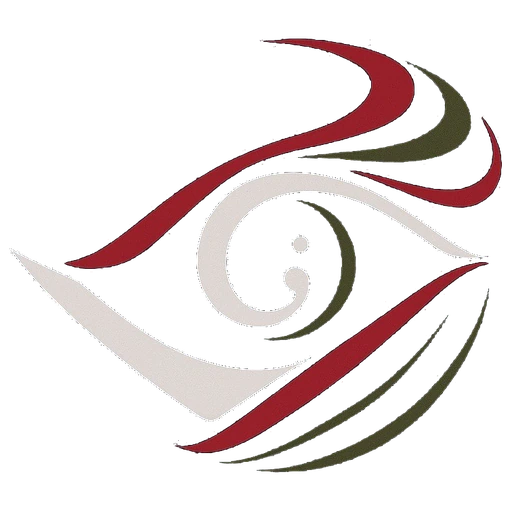
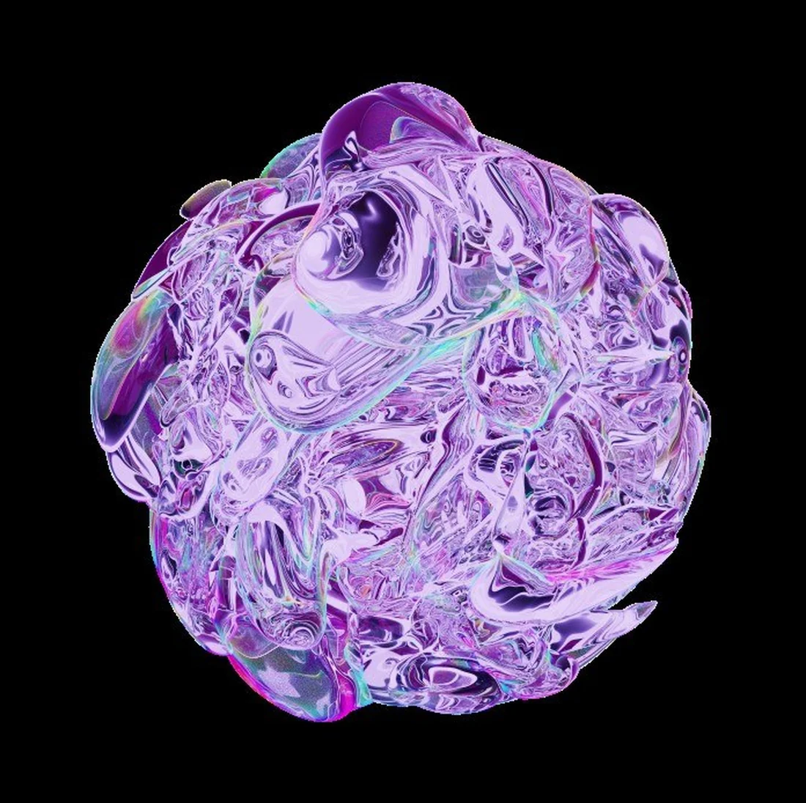
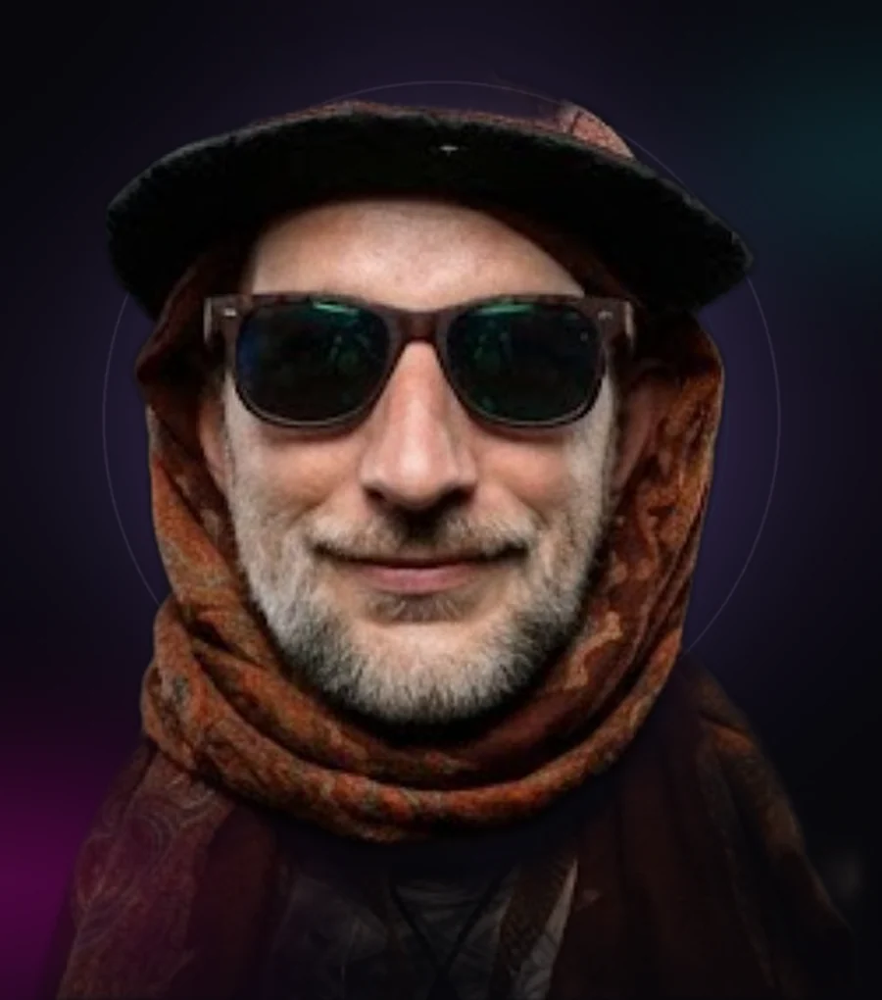

Organic
Fluid membranes, cellular structures, growth and deformation.

BENDEFORMNot just VJing — a visual ritual.
Light treated as material. Architecture as something you can shape with it.
From screen
to organism.
Artistic statement · BENDEFORM
What happens when a visual object stops behaving like content and starts behaving like space?
BENDEFORM works at the intersection of projection mapping, live visual performance and 3D digital worlds. Buildings, stages and rooms are not simply mapped — they become active parts of the visual narrative.
The aesthetic combines liquid-glass materiality, organic growth, psychedelic colour, cellular voids and geometric structures. Deep black creates the surrounding void; lilac, magenta, cyan and acid green become the visual energy of the organism.
A 10-minute live immersive audiovisual ritual — walls, floor and stage screen composed as one continuous spatial canvas.
A mysterious liquid-glass entity emerges from darkness, expands beyond the screen, colonises the architecture and transforms the immersive room into a living organism — before collapsing and being reborn.
The audience begins as an observer. As the entity grows, projections leave the logic of a flat screen and use the walls and floor as continuous spatial tissue. The viewer is gradually placed inside the visual system. The room was never merely containing the artwork — the room itself was the artwork's body.

Dense liquid-glass mass. The organism before the boundary breaks.
Cellular voids and portals. The organism opening into the room.
Almost complete darkness. A subtle pulse appears; the first circular structure materialises — isolated and fragile.
The form begins to breathe. Membranes and internal structures develop. Light starts leaking onto the surrounding walls.
The boundary breaks. Organic structures travel over architectural transitions and surround the audience on all sides.
The organism becomes unstable. Geometry fractures, perspective distorts, the spatial system accelerates.
Darkness returns. The circular seed reappears, transformed — and reframes the entire experience.
Recognisable without a logo: the circular organism, liquid surface, deep void and neon-organic palette — legible on a stage screen, immersive at room scale.
Fluid membranes, cellular structures, growth and deformation.
Transparent, refractive and liquid material behaviour.
Circular forms recurring as entry points and spatial anchors.
Colour and transformation create a shifting perceptual field.
Order, repetition and structure counterbalance the organic.
Five years on the international festival circuit — live visuals, projection mapping and light installations.
Live visuals and mapping inside Europe's mother-ship of underground culture.
Stage visuals blending organic imagery with landscape-driven stage architecture.
Immersive visual environments for two beloved boutique electronic festivals.
Visual performance at the Swiss alpine open-air — spatial language on a high-mountain stage.
Recurring visual direction and projection work across the German open-air circuit.
Light-art installations in a curated context — the bridge from club stages to museum-grade immersive work.
Projection mapping in Brazil — the organism language travelling across scenes and continents.
Sweden, Thailand, Tunis, Albania and Morocco.
Custom mapping on sculptural wood stages with integrated LED — the direct ancestor of Enter the Organism.
Documentation from stages, festivals and mapping works. Full archive on YouTube.
3D artist · projection mapper · live visual performer · Founder & CEO, NANOCAOS Studios Berlin.

BENDEFORM is an artist born and raised in the underground.
His visual language grew where the real magic happens — on forest floors, at free parties and on hand-built stages, among communities that create entire worlds out of light, wood and sound for a single weekend. From that soil the work has risen, carried by the scene itself, all the way onto some of the world's most crispy stages.
In five intense years on the international festival circuit, BENDEFORM has turned stages into moving dreamscapes: visual narratives that extend sound into space, built from organic structures, modular geometry and flowing dynamics. The visuals don't merely accompany the music — they construct atmosphere, tuned to sound, stage design and audience.
The style sits between analogue feel and digital precision: visually dense 3D mapping art and light installations described as belonging "in a futuristic art exhibit or an intergalactic nightclub" — a visual assault, in the best possible way.
As founder and CEO of NANOCAOS Studios Berlin, a multimedia production studio for festival visuals, projection mapping and stage visualisation, he leads the creative 3D and mapping side — from custom visual and spatial concepts, through 3D visualisation, to stage building, mapping and full show operation.
Projection mapping · live visuals · 3D animation · stage design · light installations · show operation
Blender · Unreal Engine
MadMapper · Resolume · TouchDesigner
NANOCAOS Studios Berlin — Founder & CEO
What if a building could suddenly breathe, grow or transform?
Projection mapping connects digital images with real architecture. Instead of projecting onto a screen, we work with what is already there: edges, windows, ledges, materials. A hands-on introduction — from the first idea, through the projection, to your own visual composition. No previous experience required.